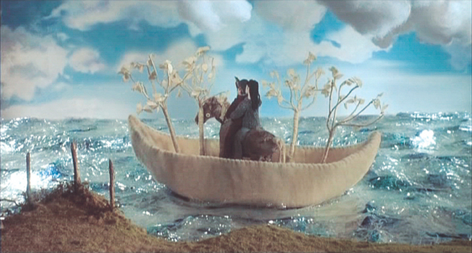

Stéphane Miroux is a man whose vivid dreams and imagination often interfere with his ability to interact with reality. He is coaxed back to his childhood home after his divorced father passes away and his mother, Christine, finds him a job in a calendar printing company in France. His mother implies the position is a creative role, and he prepares colourful drawings, each showing a disaster, for his "disasterology" calendar. However, nobody appreciates his talents and it transpires that his mother had led him on - the real vacancy is for nothing more than mundane typesetting work. While leaving his apartment to go to work one day, Stéphane injures his hand helping his new neighbor move a piano into her apartment. The new neighbor, Stéphanie, invites Stéphane into her apartment (unaware that he lives next door) where her friend Zoé tends to his wound. Stéphane initially forms an attraction to Zoé, though he suspects it is instead Stéphanie who likes him.
Stéphane realizes that Stéphanie, like him, is creative and artistic. They plan a project for use in a short animated film. Following the advice of Guy, Stéphane's sex-obsessed co-worker, Stéphane pretends that he isn't Stéphanie's neighbor, pretending to leave the building when he leaves her apartment. That night, when he is sleepwalking he writes a confusing note to Stéphanie that asks for Zoé's phone number. Stéphane realizes his mistake upon waking and retrieves the letter with a coat hanger, unaware that Stéphanie has already read it.
Surrealistic and naturalistic elements begin to overlap, and the viewer is often uncertain of which portions constitute reality and which are merely dreams. One such sequence, in which Stéphane dreams his hands become absurdly giant, was inspired by a recurring nightmare director Michel Gondry had as a child.[5] As this line gradually becomes more blurred, Stéphane becomes more enamoured with Stéphanie the more he spends time with her and shares his many inventions with her, such as the "one-second time machine," a device that can go either forward or backward in time by only one second. Stéphane's dreams encroach on his waking life as he tries to win Stéphanie's heart and misses time at work. He breaks into her apartment, taking her stuffed toy horse, and implants a mechanism inside of it that will make it gallop. While putting it back into her apartment, Stéphanie arrives and catches him, demanding he leaves and becoming more upset with him. Embarrassed and heartbroken, Stéphane retreats to his own apartment where he receives a call from Stéphanie, who apologizes and thanks him for the gift she discovers: a galloping version of "Golden the Pony Boy," who she reveals was named after Stéphane.
As the months go by, waking and dreaming become even more intermixed. To Stéphane's surprise, the calendar manufacturer accepts his "Disastrology" idea and it becomes a great success. A party is thrown in his honour, but he becomes depressed and begins drinking excessively after he witnesses Stéphanie dancing flirtatiously with another man. The next day, Stéphane and Stéphanie have a confrontation in their hallway when Stéphane announces that he doesn't want to be Stéphanie's friend any longer. Stéphanie becomes very upset, offering Zoé's phone number and reciting Stéphane's note. Stéphane, still unaware that Stéphanie has read the note, assumes that they are connected through "Parallel Synchronized Randomness", a rare phenomenon he has examined in his dreams. Stéphanie offers that they discuss their issues on a date, but on Stéphane's walk to the café to meet her, he has a frightful vision that she isn't there and she doesn't love him after all. He runs back to her apartment and bangs on her door, demanding that she stop torturing him; in actuality, she is indeed waiting for him at the café. Stéphane runs at her door, attempting to break it down, but winds up bashing his head and collapsing in the hall, where his mother eventually finds him bleeding. Tired of waiting, Stéphanie returns home while Stéphane, coaxed by his mother and her friend, decides to move back to Mexico.
Before leaving, Stéphane's mother insists that he say goodbye to Stéphanie. In his attempt to do so, he becomes extremely crass, making sexual and offensive jokes to her, and accusing her of never being able to finish something she starts. However, he reveals that he is truly interested in her because she's different from other people. As his antagonistic behavior pushes her to her breaking point, Stéphanie asks Stéphane to leave but he instead climbs into her bed and yells at her, before spotting two items on her bedside: his one-second time machine, and the finished boat they had planned to use in their animated film. Stéphane falls asleep in Stéphanie's bed. As she checks on him to see why he has become so quiet, she gently strokes his hair. The film closes with Stéphane and Stéphanie riding Golden the Pony Boy across a field before sailing off into the ocean's horizon in her white boat.